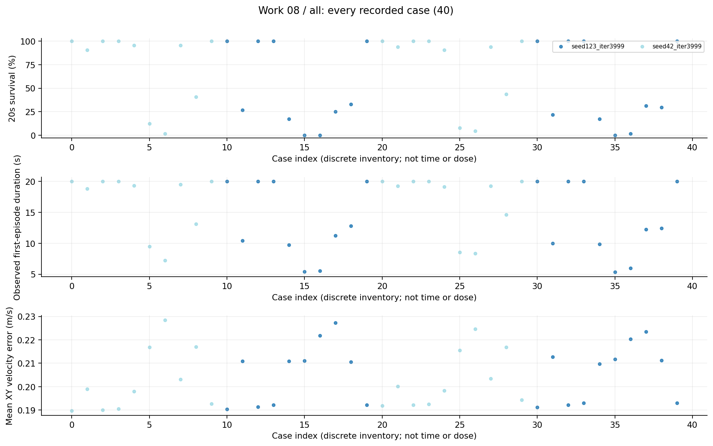
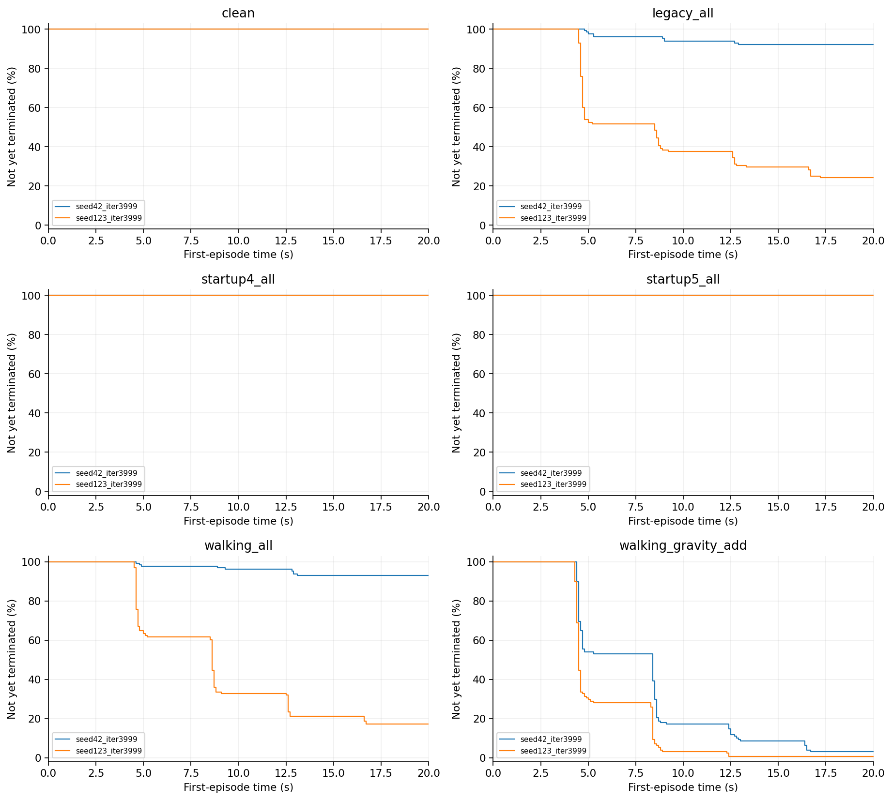
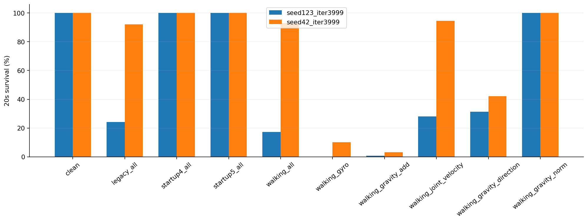
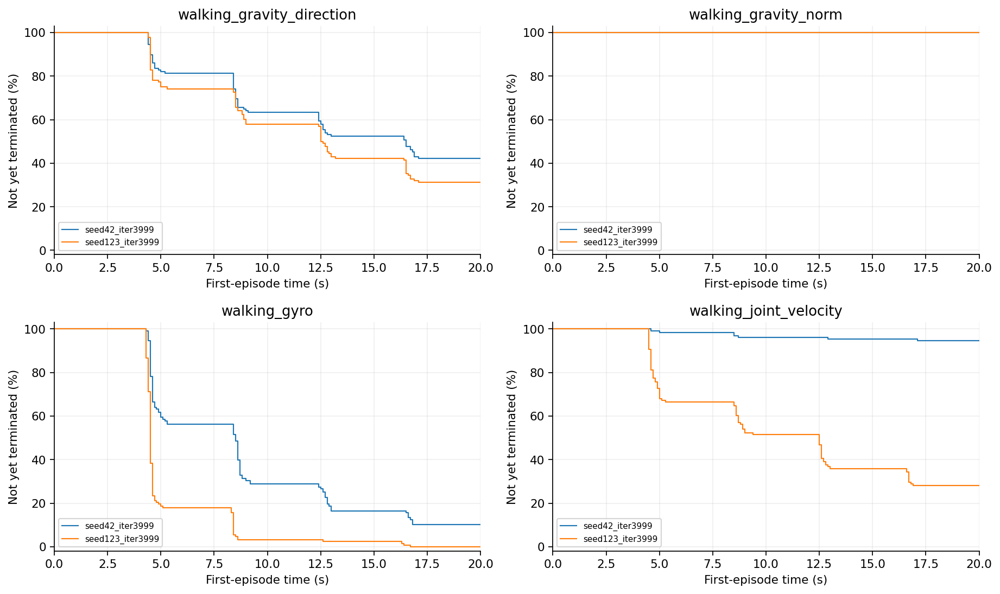

08 脉冲机制拆分研究报告
去掉启动注入后123仍明显失败，启动异常不足以单独解释弱点；角速度和重力加性单通道对42也很危险。联合响应存在非加性交互线索，不能直接推出唯一机制。
整理日期 2026年10月15日 本轮仅分析已有数据 不新增实验
工作范围
2模型×10条件×2评估seed×64首回合，40项、2560回合；本轮完成独立逐回合复算。
我们如何完成这项工作
评估seed41041、52052。比较clean、legacy_all、startup4/5、walking_all、walking_gyro、walking_gravity_add、walking_joint_velocity、walking_gravity_direction和walking_gravity_norm。模型与幅度保持原样，只分析现有CSV。
现有结果及解释
1. 每格合计128首回合：walking_all下42存活119、123存活22；walking_gyro下13和0；walking_gravity_add下4和1；walking_joint_velocity下121和36。
2. startup4和startup5均128/128；仅方向变化为54/128和40/128；仅模长变化两模型都128/128。这支持优先检查方向因素，但不足以证明模长永远无害或单位化可解决问题。
3. 本轮重新核对40份CSV的SHA、唯一首回合、存活/跌倒/NaN/出界，以及寿命、速度误差、动作与扰动等已记录聚合。最大残差约1.19×10^-5，来自回报浮点汇总；没有排除失败回合。
完整结果表
阶段、条件和命令分别保留。未记录的指标显示未记录，不按0填充。表内百分比为存活，不是任务成功率。
查看本工作全部20个汇总单元
图表及读图注释
读图注释 方向分支将受扰重力方向归一后乘回原模长；模长分支维持原方向仅换模长。它们是观测空间对照，不等同物理安装旋转。
读图注释 两评估seed已经用于旧确认，不是完全未用过的holdout；单通道和联合故障的输入能量与早停暴露不同。
英文坐标速查：survival 是规定时长存活，不是任务完成率；duration / seconds 是首回合有效寿命；vx 是前向速度，XY 是平面速度；yaw 是绕竖直轴旋转；MSE 是动作拟合平方误差；pp 是百分点，例如90%到80%为下降10个百分点。完整解释见读图指南。
图1 全部任务点 all

每个点是一项真实任务；横轴仅是文件记录顺序，不是连续变量，故不连线。点保留评估seed差异。条件、模型和分母可在全数据浏览器按编号查询；早停时误差只覆盖终止前。图2 逐故障首回合存续曲线 第1组

每个面板严格保持同一故障条件，未混合clean、启动和行走故障。纵轴为尚未终止的首回合比例，20秒超时保留在终点；0.1秒显示网格。合并的是同模型同条件评估seed，不是独立训练重复。图3 脉冲机制十条件完整对照

十个真实条件分别展示，每柱两评估seed合计128首回合。条件是类别，不连成剂量曲线；输入能量和早停暴露不同，不作单一因果解释。图4 逐故障首回合存续曲线 第2组

每个面板严格保持同一故障条件，未混合clean、启动和行走故障。纵轴为尚未终止的首回合比例，20秒超时保留在终点；0.1秒显示网格。合并的是同模型同条件评估seed，不是独立训练重复。限制与不能支持的结论
新增的是独立离线复算，不是新实验。动作代理是原始网络输出，pre-step倾角可能漏掉终止物理帧。未新增预算匹配或真实传感器实验，不作统计显著性及硬件安全主张。
证据入口与复核范围
逐文件SHA及原始路径见输入清单；本轮复算范围见数据审计。下列输入在生成后再次核对未改。
D:\MicroDuckResearch\ti\outputs\microduck_reproduction\sensor_fault_benchmark\pulse_mechanism\results.json
SHA256 252581fdd95a6064403b2618ade96a07fe9497818df63462298b95942bc0d001
这项工作的价值
价值是排除“全由启动异常造成”的单一叙事，揭示单通道与组合排名不能互推，并把此前只核对运行器汇总的pilot提升为可追到逐回合数据的描述性证据。